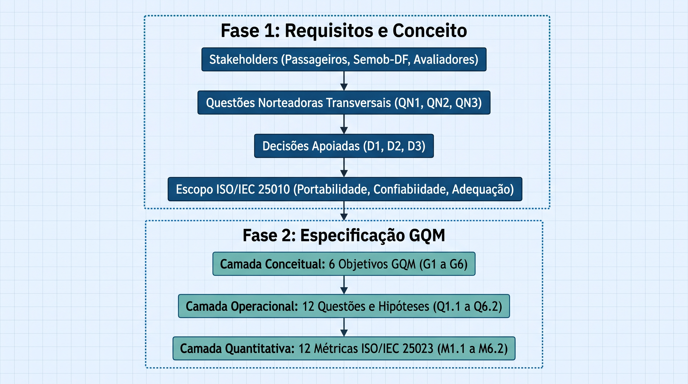

Abordagem GQM e Metas de Avaliação
A validação de qualidade do aplicativo móvel DF no Ponto fundamenta-se nas diretrizes da norma ISO/IEC 25040, que divide o ciclo de avaliação de software em quatro etapas centrais: estabelecimento de requisitos, especificação, projeto e execução. Na Fase 1, determinou-se a relevância do sistema para a mobilidade urbana do Distrito Federal, identificando os principais stakeholders, delimitando o escopo nas características de Portabilidade, Confiabilidade e Adequação Funcional (ISO/IEC 25010) e formalizando as decisões estratégicas apoiadas (D1, D2 e D3).
Esta seção consolida a Fase 2 (Especificação da Avaliação). O intuito é traduzir as necessidades conceituais dos cidadãos e requisitantes em objetivos de medição e métricas operacionais concretas, estruturadas sob o paradigma Goal–Question–Metric (GQM) e alinhadas aos indicadores da ISO/IEC 25023.
1. Transição Metodológica: Da Fase 1 ao Ciclo GQM
A especificação da Fase 2 não é um artefato isolado; ela estabelece a continuidade lógica e a operacionalização dos requisitos levantados na Fase 1. A transição dá-se pela conexão entre as necessidades dos stakeholders, as Questões Norteadoras Transversais e as Decisões Estratégicas Apoiadas:

1.1. Questões Norteadoras Transversais
As Questões Norteadoras Transversais atuam como bússolas conceituais que guiam tanto a formulação dos objetivos na Fase 2 quanto a interpretação dos resultados empíricos que serão coletados na Fase 4:
-
QN1 — Universalidade e Acesso Equitativo (Portabilidade / D1):
O aplicativo garante acesso inclusivo e funcional a todos os cidadãos do DF, independentemente da faixa de renda, tamanho da tela ou limitações de hardware e sistema operacional do aparelho?
\(\rightarrow\) Desdobramento: Orienta a Decisão D1, originando os objetivos G1 (Adaptabilidade de Telas e SO) e G2 (Instalabilidade e Ausência de Resíduos). -
QN2 — Resiliência Operacional sob Condições Reais (Confiabilidade / D2):
O aplicativo mantém sua integridade operacional e orienta o passageiro de forma confiável mesmo sob as frequentes oscilações da infraestrutura urbana (quedas de rede 3G/4G, ausência de GPS e horários de pico)?
\(\rightarrow\) Desdobramento: Orienta a Decisão D2, originando os objetivos G3 (Maturidade contra Crashes e ANRs) e G4 (Tolerância a Falhas de Conectividade e Localização). -
QN3 — Fidelidade da Informação e Utilidade Pública (Adequação Funcional / D3):
As informações de rotas, itinerários, horários previstos e geolocalização apresentadas pelo aplicativo correspondem à realidade da operação nas ruas com precisão suficiente para que o cidadão planeje sua viagem com segurança?
\(\rightarrow\) Desdobramento: Orienta a Decisão D3, originando os objetivos G5 (Correção Temporal e Espacial) e G6 (Completude da Base e Tarefas Essenciais).
2. Fundamentos do Modelo GQM
Proposto por Victor Basili, o modelo GQM parte da premissa fundamental de que qualquer medição de software deve possuir um propósito prático bem estabelecido. Sua estrutura organiza-se em três camadas hierárquicas:
| Camada | Componente | Aplicação Prática nesta Avaliação |
|---|---|---|
| Conceitual | Objetivo (Goal) | O que se pretende analisar no DF no Ponto, sob qual atributo de qualidade (ISO 25010), para qual finalidade (Decisões D1-D3) e sob a ótica de qual stakeholder. |
| Operacional | Questão (Question) | Interrogações analíticas cujas respostas comprovam o atendimento do objetivo, acompanhadas de hipóteses preditivas baseadas no uso real. |
| Quantitativo | Métrica (Metric) | Fórmulas, dados e escalas padronizadas (ISO 25023) coletadas objetivamente para responder a cada questão. |
O fluxo de trabalho opera bidirecionalmente: a especificação descende do conceito às métricas, enquanto a análise futura ascende dos dados empíricos para responder às questões e julgar os objetivos.
A escolha de cada métrica não é arbitrária: ela deriva de um objetivo, responde a uma questão e se apoia em norma e literatura, conforme resumido na seção 3.1.
3. Visão Geral do Planejamento GQM
Para abranger as necessidades mapeadas na Fase 1, o escopo foi desdobrado em 6 objetivos de medição (Goals), estruturados em estrita consonância com as Questões Norteadoras e as Decisões Apoiadas:
| Objetivo | Questão Norteadora | Decisão Apoiada | Característica / Subcaracterística (ISO 25010) | Questões Operacionais | Métricas (ISO 25023) |
|---|---|---|---|---|---|
| G1 | QN1 | D1 | Portabilidade / Adaptabilidade | Q1.1, Q1.2 | M1.1 – Adaptabilidade de Hardware (Telas) M1.2 – Adaptabilidade de Sistema Operacional |
| G2 | QN1 | D1 | Portabilidade / Instalabilidade | Q2.1, Q2.2 | M2.1 – Sucesso de Instalação M2.2 – Resíduo Pós-Desinstalação |
| G3 | QN2 | D2 | Confiabilidade / Maturidade | Q3.1, Q3.2 | M3.1 – Sessões sem Crashes M3.2 – Sessões sem Congelamentos |
| G4 | QN2 | D2 | Confiabilidade / Tolerância a Falhas | Q4.1, Q4.2 | M4.1 – Evitação de Quebra (Conexão) M4.2 – Tratamento de Perda de GPS |
| G5 | QN3 | D3 | Adequação Funcional / Correção | Q5.1, Q5.2 | M5.1 – Precisão de Tempo M5.2 – Correção de Dados (Mapa) |
| G6 | QN3 | D3 | Adequação Funcional / Completude (e Pertinência) | Q6.1, Q6.2 | M6.1 – Cobertura de Tarefas Essenciais M6.2 – Completude do Banco |
| Total | 3 QNs | 3 Decisões | 3 Características / 6 Subcaracterísticas | 12 Questões | 12 Métricas |
3.1. Fundamentação, Adaptação e Relevância das Métricas
A ISO/IEC 25023 define medidas genéricas, em geral razões do tipo \(X = A/B\). As métricas deste projeto são adaptações dessas medidas a um aplicativo móvel de transporte público; quando a norma não traz medida equivalente, a métrica é declarada como extensão do projeto. Fórmulas, escalas e limiares estão em Métricas e Julgamento.
| Métrica | Embasamento teórico | Adaptação do projeto | Impacto técnico e relevância |
|---|---|---|---|
| M1.1 Adaptabilidade de Hardware (Telas) | ISO/IEC 25010 (adaptabilidade); ISO/IEC 25023 (adaptabilidade ao ambiente de hardware); WCAG 2.1, critério 1.4.4 (texto ampliável a 200%) | Unidade de contagem: caso tela × configuração (resolução, orientação, tamanho de fonte); razão \(T_s / T_t\). Depende da amostra de dispositivos, que deve ser informada | Sobreposição ou corte de controles sobre o mapa impede a consulta no ponto de ônibus, sem alternativa imediata; indica quais configurações corrigir (D1) |
| M1.2 Adaptabilidade de Sistema Operacional | ISO/IEC 25010 (adaptabilidade); ISO/IEC 25023 (adaptabilidade ao ambiente de software de sistema) | Versão aprovada somente se todos os fluxos críticos concluírem sem erro impeditivo. Mede proporção de versões, não de usuários | Aparelhos de entrada tendem a ficar em versões antigas; incompatibilidade exclui esse grupo (QN1) |
| M2.1 Sucesso de Instalação | ISO/IEC 25010 (instalabilidade); ISO 9241-11 (eficácia); Tullis e Albert (2013) (taxa de sucesso de tarefa) | Extensão do projeto (sem medida equivalente na ISO/IEC 25023). Conta só a primeira tentativa | Falha de instalação impede qualquer uso posterior; falta de espaço em aparelhos de armazenamento restrito é cenário plausível (QN1) |
| M2.2 Resíduo Pós-Desinstalação | ISO/IEC 25010 (instalabilidade inclui a desinstalação) | Extensão do projeto. Os locais inspecionados devem incluir áreas que sobrevivem à desinstalação (no Android, o armazenamento compartilhado; os dados específicos do app são removidos). Não mede o volume em bytes | Arquivos órfãos ocupam armazenamento escasso em aparelhos de entrada |
| M3.1 Sessões sem Crashes | ISO/IEC 25010 (maturidade); Musa, Iannino e Okumoto (1987) e IEEE 982.1 (taxa de falhas); Android vitals (crash percebido: 1,09%) | A sessão é a unidade; o Android vitals conta usuários ativos diários, então os limiares servem como ordem de grandeza, não como equivalência | Encerramento inesperado durante a aproximação do ônibus pode custar a viagem (QN2) |
| M3.2 Sessões sem Congelamentos | ISO/IEC 25010 (maturidade); Android Developers (ANR: sem resposta a eventos de entrada em cerca de 5 s); Android vitals (ANR: 0,47%) | Mede o congelamento percebido (> 5 s), conceito não restrito ao Android; o diagnóstico formal de ANR exige evidência em log | Interface congelada no ponto tem efeito próximo ao de um crash: a informação não chega no momento necessário |
| M4.1 Mitigação de Perda de Conexão | ISO/IEC 25010 (tolerância a falhas); ISO/IEC 25023 (failure avoidance); Avižienis et al. (2004); Hsueh, Tsai e Iyer (1997) (injeção de falhas); heurísticas de Nielsen | Falha injetada: queda de rede. Ensaio binário; informar o total de ensaios \(R_t\) junto ao resultado | Com conectividade oscilante, um app que quebra ou fica em carregamento infinito transfere ao usuário o custo da falha de infraestrutura (QN2) |
| M4.2 Tratamento de Perda de GPS | Mesma base de M4.1 | Falha injetada: localização desativada. Avalia o tratamento da perda, não a qualidade do sinal | Funções de localização param com o GPS desativado (inclusive por economia de energia); consultas independentes devem continuar disponíveis |
| M5.1 Precisão de Tempo | ISO/IEC 25010 (correção funcional); Watkins et al. (2011), Mishalani et al. (2006) e Brakewood et al. (2015) (informação em tempo real para ônibus) | Erro absoluto mediano em minutos, robusto a valores atípicos (Fenton e Bieman, 2014). Limiares de 2, 5 e 10 min são decisão do projeto; informar também a dispersão e o tamanho da amostra | Previsão errada leva o passageiro a decidir mal entre esperar, caminhar ou buscar alternativa (QN3) |
| M5.2 Correção de Dados (Mapa) | ISO/IEC 25010 (correção funcional); ISO/IEC 25012 (exatidão); Sinnott (1984) (haversine); GPS.gov (cerca de 4,9 m sob céu aberto) | Razão \(P_s / P_t\) de posições dentro da tolerância \(\varepsilon\). \(\varepsilon\) e \(\Delta t_{max}\) são fixados antes da coleta, sem ficar abaixo do erro do receptor de referência | Posição incorreta de parada ou veículo leva o usuário a esperar no local errado |
| M6.1 Cobertura de Tarefas Essenciais | ISO/IEC 25010 (completude e pertinência funcional); ISO 9241-11; Tullis e Albert (2013) | Tarefas executadas de ponta a ponta; combina completude e correção do fluxo, por isso o catálogo fixa entradas e resultados esperados | Buscar linha, ver itinerário e horários e salvar favoritos são o propósito do app (QN3) |
| M6.2 Completude do Banco | ISO/IEC 25012 (completude); ISO/IEC 25024; ISO/IEC 25023 (completude funcional) | Confronto, em amostra auditada, com o catálogo oficial da Semob-DF; o resultado vale para a amostra e a data de referência | Linha ou itinerário ausente é invisível ao usuário, que não sabe que o app está incompleto (QN3) |
Tabela 2. Fundamentação, adaptação e relevância das 12 métricas.
4. Metas de Medição (Objetivos GQM)
Os objetivos de medição foram formalizados utilizando o template clássico do GQM, explicitando a transição direta das prioridades da Fase 1:
G1 — Portabilidade (Adaptabilidade) · Orientado por QN1 e D1
| Parâmetro do Template | Especificação do Alvo |
|---|---|
| Analisar | o aplicativo móvel DF no Ponto em diferentes arquiteturas de hardware e resoluções de tela |
| com a finalidade de | compreender o comportamento adaptativo da interface gráfica e a compatibilidade operacional |
| no que se refere à | Portabilidade (subcaracterística de Adaptabilidade) |
| do ponto de vista de | usuários finais e cidadãos que utilizam smartphones de entrada com telas compactas |
| no contexto de | testes de caixa preta em múltiplos dispositivos físicos e emuladores móveis |
Métricas do objetivo (fórmulas, escalas e limiares em Métricas e Julgamento):
- M1.1 – Adaptabilidade de Hardware (Telas): proporção de casos de tela e configuração (resolução, orientação, tamanho de fonte) em que a interface permanece utilizável.
- M1.2 – Adaptabilidade de Sistema Operacional: proporção de versões de SO em que todos os fluxos críticos concluem sem erro impeditivo.
G2 — Portabilidade (Instalabilidade) · Orientado por QN1 e D1
| Parâmetro do Template | Especificação do Alvo |
|---|---|
| Analisar | o processo de distribuição, instalação e remoção do DF no Ponto |
| com a finalidade de | avaliar a taxa de sucesso nas lojas oficiais e a integridade de armazenamento pós-desinstalação |
| no que se refere à | Portabilidade (subcaracterística de Instalabilidade) |
| do ponto de vista de | cidadãos com aparelhos de armazenamento restrito e equipes de suporte |
| no contexto de | ciclos padronizados de instalação limpa e auditoria de arquivos residuais no sistema de arquivos |
Métricas do objetivo (fórmulas, escalas e limiares em Métricas e Julgamento):
- M2.1 – Sucesso de Instalação: taxa de instalações concluídas com sucesso na primeira tentativa.
- M2.2 – Resíduo Pós-Desinstalação: ausência de arquivos residuais observáveis após a remoção do aplicativo.
G3 — Confiabilidade (Maturidade) · Orientado por QN2 e D2
| Parâmetro do Template | Especificação do Alvo |
|---|---|
| Analisar | a estabilidade operacional e a frequência de travamentos do DF no Ponto |
| com a finalidade de | medir o índice de sessões sem falhas inesperadas de execução |
| no que se refere à | Confiabilidade (subcaracterística de Maturidade) |
| do ponto de vista de | passageiros em deslocamento diário sob uso ativo do sistema |
| no contexto de | sessões monitoradas de navegação contínua por fluxos de pesquisa e consulta de rotas |
Métricas do objetivo (fórmulas, escalas e limiares em Métricas e Julgamento):
- M3.1 – Sessões sem Crashes: proporção de sessões que não sofrem encerramento inesperado.
- M3.2 – Sessões sem Congelamentos: proporção de sessões sem congelamento da interface superior a 5 segundos.
G4 — Confiabilidade (Tolerância a Falhas) · Orientado por QN2 e D2
| Parâmetro do Template | Especificação do Alvo |
|---|---|
| Analisar | a resiliência do DF no Ponto diante de oscilações adversas da infraestrutura externa |
| com a finalidade de | avaliar a capacidade de resposta e recuperação perante quedas de rede móvel e perda de GPS |
| no que se refere à | Confiabilidade (subcaracterística de Tolerância a Falhas) |
| do ponto de vista de | passageiros aguardando em paradas com sinal deficiente |
| no contexto de | ensaios de interrupção induzida de conexão 3G/4G e suspensão de localização |
Métricas do objetivo (fórmulas, escalas e limiares em Métricas e Julgamento):
- M4.1 – Evitação de Quebra (Conexão): proporção de ensaios de queda de rede em que o app não quebra, informa a indisponibilidade e retoma após a reconexão.
- M4.2 – Tratamento de Perda de GPS: proporção de ensaios de desativação da localização em que o app orienta o usuário e mantém disponíveis as consultas independentes de localização.
G5 — Adequação Funcional (Correção) · Orientado por QN3 e D3
| Parâmetro do Template | Especificação do Alvo |
|---|---|
| Analisar | a exatidão quantitativa das previsões de chegada e da localização dos ônibus no mapa |
| com a finalidade de | quantificar o erro temporal em minutos e o desvio espacial métrico das informações |
| no que se refere à | Adequação Funcional (subcaracterística de Correção) |
| do ponto de vista de | cidadãos que necessitam de previsibilidade para o embarque |
| no contexto de | auditoria comparativa entre os dados do aplicativo e a chegada física dos ônibus em paradas de campo |
Métricas do objetivo (fórmulas, escalas e limiares em Métricas e Julgamento):
- M5.1 – Precisão de Tempo: erro absoluto mediano, em minutos, entre a previsão de chegada e a chegada real.
- M5.2 – Correção de Dados (Mapa): proporção de posições de ônibus e paradas dentro da tolerância espacial em relação à referência.
G6 — Adequação Funcional (Completude e Pertinência) · Orientado por QN3 e D3
| Parâmetro do Template | Especificação do Alvo |
|---|---|
| Analisar | a cobertura da malha de linhas/itinerários e o sucesso na execução de tarefas vitais |
| com a finalidade de | certificar a sincronização do banco com a Semob-DF e a eficácia das funções essenciais |
| no que se refere à | Adequação Funcional (subcaracterística de Completude, delimitada pela Pertinência) |
| do ponto de vista de | passageiros planejando trajetos complexos e órgãos gestores do transporte |
| no contexto de | execução integral do catálogo de tarefas essenciais e confronto amostral com a base da Semob-DF |
Métricas do objetivo (fórmulas, escalas e limiares em Métricas e Julgamento):
- M6.1 – Cobertura de Tarefas Essenciais: proporção de tarefas essenciais executadas de ponta a ponta com sucesso.
- M6.2 – Completude do Banco: proporção de linhas e itinerários do catálogo oficial da Semob-DF presentes no aplicativo, em amostra auditada.
5. Matriz de Questões, Hipóteses e Abstraction Sheets
O desdobramento das metas conceituais resultou em 12 questões operacionais acompanhadas de suas hipóteses preditivas, harmonizadas com as métricas detalhadas em Métricas e Julgamento:
Matriz de Questões e Hipóteses Operacionais
| Objetivo / Eixo | ID | Questão Operacional (Question) | Hipótese Preditiva (Hypothesis) | Métrica Vinculada |
|---|---|---|---|---|
| G1 — Portabilidade (Adaptabilidade) | Q1.1 | A interface gráfica se redimensiona sem sobreposições em telas compactas? | H1.1: Telas abaixo de 5 polegadas podem apresentar sobreposições pontuais na camada do mapa. | M1.1 – Adaptabilidade de Hardware (Telas) |
| Q1.2 | O aplicativo executa sem erros críticos de compatibilidade em versões legadas de SO? | H1.2: Espera-se pleno funcionamento nas versões de SO testadas (Android 9 a 13). | M1.2 – Adaptabilidade de Sistema Operacional | |
| G2 — Portabilidade (Instalabilidade) | Q2.1 | O processo de instalação nas lojas oficiais ocorre na primeira tentativa sem erro? | H2.1: Espera-se taxa de sucesso de 100% nas instalações oficiais. | M2.1 – Sucesso de Instalação |
| Q2.2 | O aplicativo remove totalmente seus dados temporários após a desinstalação? | H2.2: Espera-se a permanência de arquivos residuais de cache no armazenamento interno. | M2.2 – Resíduo Pós-Desinstalação | |
| G3 — Confiabilidade (Maturidade) | Q3.1 | O aplicativo evita encerramentos forçados (crashes) durante sessões ativas? | H3.1: Alta estabilidade geral, com eventuais falhas concentradas em picos de requisição de dados. | M3.1 – Sessões sem Crashes |
| Q3.2 | O sistema previne congelamentos prolongados de tela superiores a 5 segundos (ANRs)? | H3.2: Ocorrência pontual de travamentos temporários ao sincronizar grandes bases geográficas. | M3.2 – Sessões sem Congelamentos | |
| G4 — Confiabilidade (Tolerância a Falhas) | Q4.1 | O aplicativo trata quedas momentâneas de conexão com mensagens amigáveis? | H4.1: O app pode apresentar telas de carregamento infinito por carência de modo offline. | M4.1 – Evitação de Quebra (Conexão) |
| Q4.2 | O sistema reage apropriadamente à ausência ou desativação do sinal de GPS? | H4.2: O app orienta visualmente o usuário a restabelecer a localização sem quebrar a sessão. | M4.2 – Tratamento de Perda de GPS | |
| G5 — Adequação Funcional (Correção) | Q5.1 | As previsões de horários de chegada refletem com precisão a aproximação física? | H5.1: Margem de divergência tolerável de poucos minutos decorrente do tráfego urbano real. | M5.1 – Precisão de Tempo |
| Q5.2 | A posição dos ônibus e paradas no mapa coincide com a posição espacial real? | H5.2: Exatidão satisfatória, sujeita a eventuais atrasos na transmissão dos dados do hardware embarcado. | M5.2 – Correção de Dados (Mapa) | |
| G6 — Adequação Funcional (Completude) | Q6.1 | O catálogo de tarefas essenciais executa de ponta a ponta com sucesso? | H6.1: Módulos de busca de rotas e salvamento de favoritos operam sem falhas estruturais. | M6.1 – Cobertura de Tarefas Essenciais |
| Q6.2 | A base de linhas e itinerários do app está plenamente sincronizada com a Semob-DF? | H6.2: Cobertura satisfatória das principais linhas troncais registradas no DF. | M6.2 – Completude do Banco |
Abstraction Sheets por Agrupamento de Qualidade
A. Portabilidade (G1 e G2) · QN1 / D1
| Foco de Qualidade (Baseline Esperada) | Fatores de Variação e Impacto |
|---|---|
| Telas abaixo de 5 polegadas podem sofrer sobreposição de elementos no mapa · A instalação via loja oficial ocorre sem fricção, mas podem persistir arquivos residuais de cache após a remoção. | • Modos de acessibilidade do SO (ex: fontes ampliadas) alteram o dimensionamento visual da UI. • Permissões de hardware negadas no primeiro uso podem ser interpretadas erroneamente como barreiras de instalação. |
B. Confiabilidade (G3 e G4) · QN2 / D2
| Foco de Qualidade (Baseline Esperada) | Fatores de Variação e Impacto |
|---|---|
| Estima-se que picos de acesso sobrecarreguem requisições, gerando índices pontuais de ANR · O aplicativo carece de um modo offline robusto, resultando em tempos de espera excessivos sob redes móveis instáveis. | • Indisponibilidade temporária da API da Semob paralisa o front-end, gerando falsos positivos de falha interna no cliente. • Modos de economia de energia ativados no dispositivo podem suspender serviços de localização em segundo plano. |
C. Adequação Funcional (G5 e G6) · QN3 / D3
| Foco de Qualidade (Baseline Esperada) | Fatores de Variação e Impacto |
|---|---|
| Espera-se uma margem de divergência tolerável entre as previsões e a chegada física dos coletivos · Os módulos principais de busca e salvamento de favoritos operam sem falhas estruturais em 100% dos testes. | • Variáveis operacionais urbanas (congestionamentos severos ou falhas físicas em rastreadores embarcados nos ônibus) distorcem a precisão do tempo estimado, refletindo limitações de infraestrutura externa e não de código. |
6. Referências Bibliográficas
- BASILI, Victor R.; CALDIERA, Gianluigi; ROMBACH, H. Dieter. The Goal Question Metric Approach. Encyclopedia of Software Engineering, 1994.
- ISO/IEC 25010:2023. Systems and software engineering — Systems and software Quality Requirements and Evaluation (SQuaRE) — Product quality model.
- ISO/IEC 25023:2016. Systems and software engineering — Systems and software Quality Requirements and Evaluation (SQuaRE) — Measurement of system and software product quality.
- BASILI, Victor R.; WEISS, David M. A methodology for collecting valid software engineering data. IEEE Transactions on Software Engineering, v. SE-10, n. 6, p. 728–738, 1984.
- ANDROID DEVELOPERS. Documentação sobre ANRs, armazenamento específico do app e suporte a diferentes tamanhos de tela. Disponível em: https://developer.android.com.
- AVIŽIENIS, Algirdas; LAPRIE, Jean-Claude; RANDELL, Brian; LANDWEHR, Carl. Basic concepts and taxonomy of dependable and secure computing. IEEE Transactions on Dependable and Secure Computing, v. 1, n. 1, p. 11–33, 2004.
- BRAKEWOOD, Candace; MACFARLANE, Gregory S.; WATKINS, Kari. The impact of real-time information on bus ridership in New York City. Transportation Research Part C, v. 53, p. 59–75, 2015.
- FENTON, Norman; BIEMAN, James. Software Metrics: A Rigorous and Practical Approach. 3. ed. CRC Press, 2014.
- GOOGLE. Android vitals — bad behavior thresholds. Disponível em: https://developer.android.com/google/play/vitals. Acesso em: 13 nov. 2026.
- GPS.GOV. GPS Accuracy. Disponível em: https://www.gps.gov/systems/gps/performance/accuracy/.
- HSUEH, Mei-Chen; TSAI, Timothy K.; IYER, Ravishankar K. Fault injection techniques and tools. Computer, v. 30, n. 4, p. 75–82, 1997.
- IEEE. IEEE Std 982.1-2005 — Standard Dictionary of Measures of the Software Aspects of Dependability.
- ISO 9241-11:2018. Ergonomics of human-system interaction — Part 11: Usability: Definitions and concepts.
- ISO/IEC 25012:2008. Software engineering — SQuaRE — Data quality model.
- ISO/IEC 25024:2015. Systems and software engineering — SQuaRE — Measurement of data quality.
- MISHALANI, Rabi G.; MCCORD, Mark M.; WIRTZ, John. Passenger wait time perceptions at bus stops: empirical results and impact on evaluating real-time bus arrival information. Journal of Public Transportation, v. 9, n. 2, p. 89–106, 2006.
- MUSA, John D.; IANNINO, Anthony; OKUMOTO, Kazuhira. Software Reliability: Measurement, Prediction, Application. McGraw-Hill, 1987.
- NIELSEN, Jakob. 10 Usability Heuristics for User Interface Design. Nielsen Norman Group.
- SINNOTT, Roger W. Virtues of the Haversine. Sky and Telescope, v. 68, n. 2, p. 159, 1984.
- TULLIS, Thomas; ALBERT, William. Measuring the User Experience. 2. ed. Morgan Kaufmann, 2013.
- W3C. Web Content Accessibility Guidelines (WCAG) 2.1 — critério 1.4.4, Redimensionar texto. Disponível em: https://www.w3.org/TR/WCAG21/.
- WATKINS, Kari E.; FERRIS, Brian; BORNING, Alan; RUTHERFORD, G. Scott; LAYTON, David. Where Is My Bus? Impact of mobile real-time information on the perceived and actual wait time of transit riders. Transportation Research Part A, v. 45, n. 8, p. 839–848, 2011.
- ISO/IEC 25040:2011. Systems and software engineering — Systems and software Quality Requirements and Evaluation (SQuaRE) — Evaluation process.
Histórico de Versões
| ID | Descrição | Autor | Data | Revisor | Data |
|---|---|---|---|---|---|
| 01 | Criação inicial do documento | Cristiano | 31/10/2026 | Bessa | 31/10/2026 |
| 02 | Formalização da Transição Metodológica (Fase 1 \(\rightarrow\) Fase 2), inclusão das Questões Norteadoras (QN1-QN3) e alinhamento com Decisões D1-D3 | João Guilherme Fonseca | 11/11/2026 | Pedro Ramos | 11/11/2026 |
| 03 | Inclusão da seção 3.1 (fundamentação, adaptação e relevância das métricas), dos nomes e descrições das métricas nas seções 3, 4 e 5 e das referências correspondentes | Pedro Ramos | 13/11/2026 | — | — |